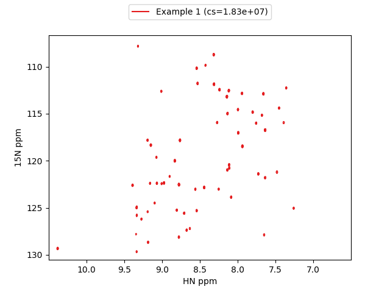

Using pandas for NMR data
Loading data
from nmr_to_pandas import nmr_to_pandas
# load a pseudo 3D dataset. `pseudo_dim=0` sets the pseudo dimension assuming
# your data has shape (Z,Y,X) where Z is the pseudo dimension
data = nmr_to_pandas("test_pipe.ft2", pseudo_dim=0)
# your data object now has the attribute `df`
data.df.head()
You now have your NMR data in the form of a pandas dataframe where Z is the plane number and Y and X are points. The intensity column contains the intensity for each point and for convenience the X and Y ppm values are also provided (X_PPM and Y_PPM, respectively).
Z Y X intensity Y_PPM X_PPM
0 0.0 0.0 0.0 -24273.875000 130.538386 10.498205
1 0.0 0.0 1.0 -33351.800781 130.538386 10.490872
2 0.0 0.0 2.0 -9466.987305 130.538386 10.483539
3 0.0 0.0 3.0 -1997.709473 130.538386 10.476206
4 0.0 0.0 4.0 10106.075195 130.538386 10.468873
To slice out data you can use the pandas.Dataframe.query method.
data.df.query("Z==1 & Y_PPM < 120 and X_PPM < 9")
Z Y X intensity Y_PPM X_PPM
201679 1.0 113.0 205.0 32269.908203 119.945665 8.994906
201680 1.0 113.0 206.0 73720.929688 119.945665 8.987572
201681 1.0 113.0 207.0 -35410.578125 119.945665 8.980239
201682 1.0 113.0 208.0 715.999634 119.945665 8.972906
201683 1.0 113.0 209.0 37729.289062 119.945665 8.965573
Plotting
To create a matplotlib contour plot of the data:
data.name = "Example 1"
kwargs=dict(colors="red", negative_contours=dict(colors="orange"))
# create figure
fig = plt.figure()
ax = fig.add_subplot(111)
# contour plot of first plane (Z==0)
ax = data.plot_contour(ax, query=f"Z==0", kwargs=kwargs, show_cs=True, invert_axes=True)

To zoom on a specific region:
data.name = "Example 2"
kwargs=dict(colors="tab:blue", negative_contours=dict(colors="orange"))
query = "Z==1 & X_PPM > 7.24 & X_PPM < 7.28 & Y_PPM > 124.8 & Y_PPM < 125.3"
fig = plt.figure()
ax = fig.add_subplot(111)
ax = data.plot_contour(ax, query=query, kwargs=kwargs, threshold=1e7, show_cs=True, invert_axes=True)
plt.grid()
Here is an example of how you might overlay some spectra for comparison (I'm just shifting and overlaying the same spectrum for illustrative purposes):
colors = plt.cm.get_cmap("Set1")
colors = iter([colors(i) for i in range(20)])
fig = plt.figure()
ax = fig.add_subplot(111)
for i in range(5):
data.name = f" Example {i+3}"
kwargs=dict(colors=[next(colors)], negative_contours=dict(colors="red"))
ax = data.plot_contour(ax, query=f"Z==0 & X_PPM > 7 & X_PPM < 9.5 & Y_PPM > 110 & Y_PPM < 125", kwargs=kwargs, show_cs=True)
data.df["Y_PPM"] = data.df.Y_PPM + 1.0
data.df["X_PPM"] = data.df.X_PPM + 0.1
ax.invert_yaxis()
ax.invert_xaxis()

Customizing plots
Colors
Any matplotlib colormap can be used in the following way by providing its name as a string:
kwargs=dict(cmap="viridis", linewidths=1.0, negative_contours=dict(colors="red"))
Note
If colors is provided then this takes precedence over any cmap definition.
e.g. if kwargs=dict(cmap="viridis", colors="red") then contours will be drawn red and viridis will be ignored.
Legends
If the name attribute of your nmrData object is populated with a string then this will be used to create a legend for your contour plot.
data = nmr_to_pandas("test_pipe.ft2", pseudo_dim=0)
data.name = "Example 1"
If show_cs=True then the value of the contour start (cs) or threshold value is shown in the legend.
data.plot_contour(ax, query="Z==0", kwargs=kwargs, threshold=1e7, show_cs=True, invert_axes=True)
Note
Legends are only available for contour plots using colors and not cmaps.